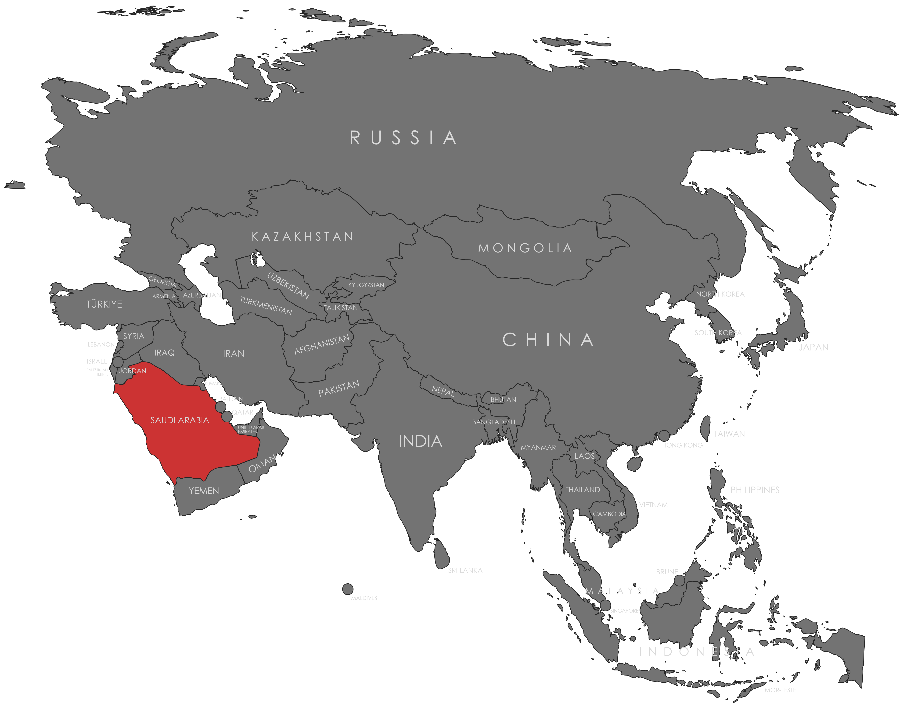

Specifications
- Local Name: المملكة العربية السعودية (Al-Mamlakah Al-‘Arabīyah As-Su‘ūdīyah)
- Proportion: 2:3
- Name of the Flag: Flag of the Shahada and Sword (ʿAlam ash-Shahāda wa as-Sayf; علم الشهادة والسيف)
- Adopted: March 15, 1973
Symbolism
- Green: Islam and prosperity
- White: Purity and peace
- White Arabic inscription: Islamic declaration of faith (Shahada)
- White sword: Justice and strength
Colors:
Shapes / Symbols:
Meaning / Special Display
- The flag is never lowered to half-mast as it bears the sacred Islamic declaration.
- Used prominently in religious, national, and government events as a symbol of faith and sovereignty.
Description
- Represents Saudi Arabia’s Islamic identity, justice, and national pride.
- Citizens see it as a symbol of unity, devotion to faith, and national authority.

Return to Gallery